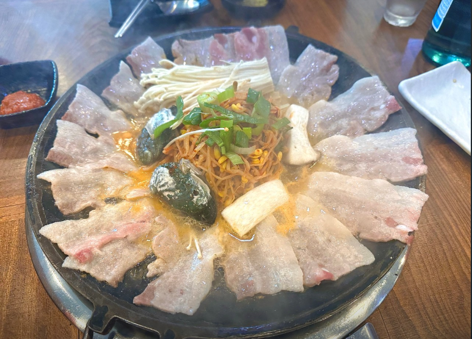
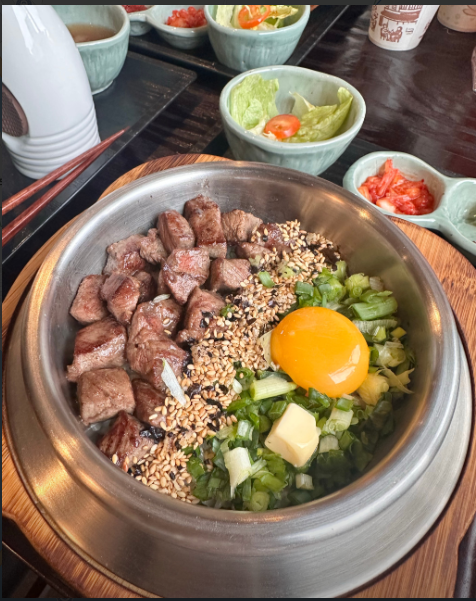

맛집
-

광안리 갈삼구이
(부산 수영구 민락수변로7)
(지번: 민락동 181-86)
전화: 0507-1412-9266 -

요이쿠마
(부산 수영구 광안해변로 307번길 20 1층 요이쿠마)
(지번: 민락동 24-30)
전화: 0507-1315-5497 -

솔솥
(부산 수영구 광남로 78 1층)
(지번: 광안동 203-10)
전화: 0507-1386-4595